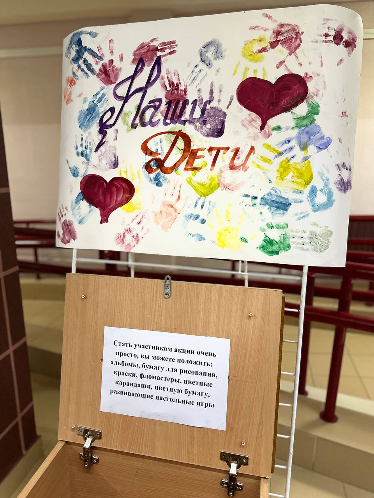
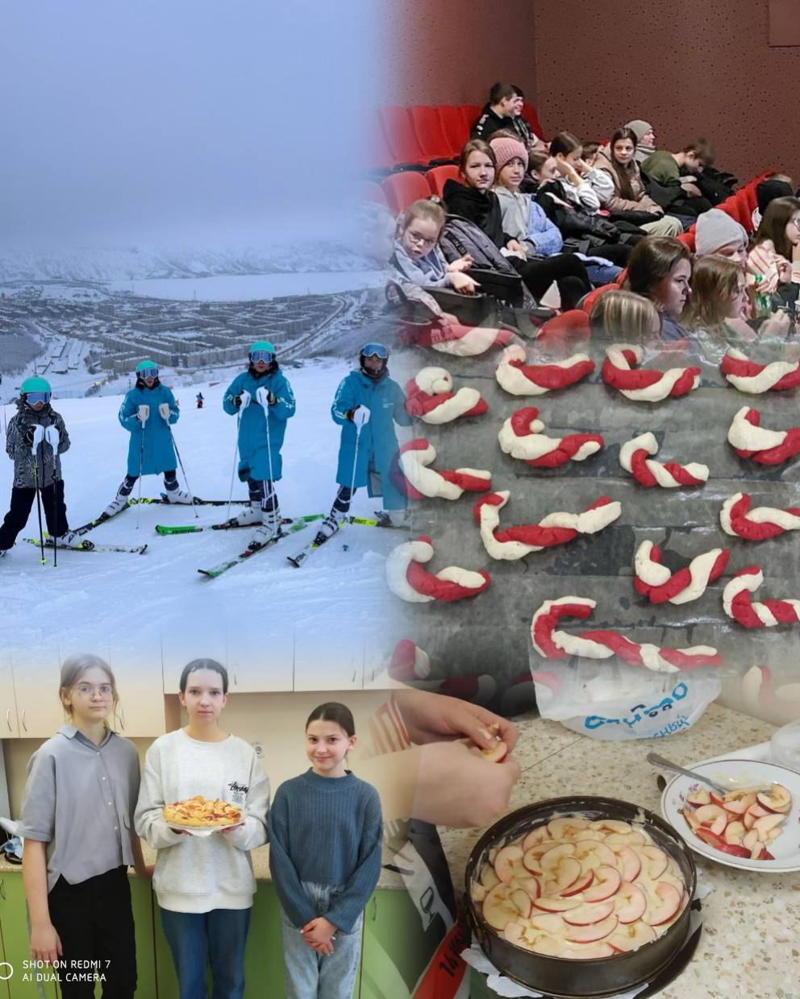
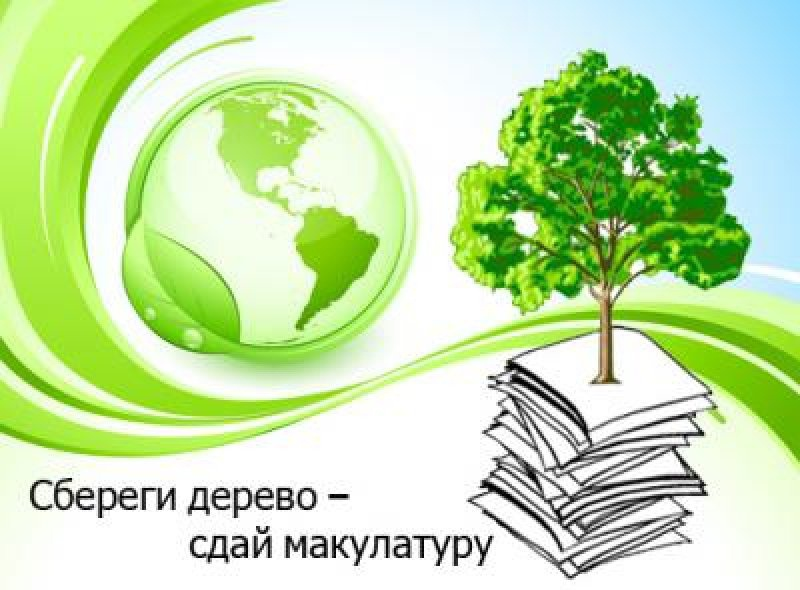

 С 12.12.2023, в нашей школе, на первом этаже в холле, будет проводится акция "Наши дети" .
Акция проводится в поддержку детей-сирот, детей, оказавшихся в трудной жизненной ситуации, детей с инвалидностью,
больных детей, учреждений образования, здравоохранения, социальной защиты.
У вас есть возможнотсь помочь детям.
Из необходимого это : альбомы, бумага для рисования, краски, фломастеры, цветные карандаши, настольные игры и т.д.

1-4-е классы - Конкурс-игра "Наша дружная семья". Нашими задачами были: выявить интеллектуальные и творческие способности детей и их родителей; развить чувство солидарности и здорового соперничества; пособствовать развитию семейного творчества и сотрудничества семьи и гимназии; привить обучающимся чувство любви и уважения к родителям, гордости за свою семью; вызвать и укрепить интерес детей и взрослых к совместному проведению досуга.
5 «А» класс - «Профессии вокруг меня». Мы расширили знания учащихся о профессиях, сформировали интерес к различным профессиям.
6-е классы "Самые ловкие".
7-е классы - Посещение кинотеатра «Беларусь».
8-е классы "Мастер-шеф". Ученицы 8-ого класса узнали много новых интересных рецепотов и даже смогли приготовить один из них!
9-е классы Профориентационное занятие. Профориентация направлена на то, чтобы помочь в выборе сферы деятельности, учитывая психологические особенности человека, а также его знания и таланты.
11-е классы - "Трудовой десант".Подобные мероприятия воспитывают у детей и подростков добросовестное отношение к труду, любовь и бережное отношение к природе, формируют знание и навыки ландшафтного дизайна.
Резун Роман, 6 «Б» класса, на сборах по подготовке к соревнованиям по горнолыжному спорту в г. Кировск. Наш будущий чемпион!

Сбор макулатуры — процесс сбора старых книг, газет, журналов, дневников и других бумажных изделий. Макулатура подвергается вторичной обработке. Вторичное сырье снова используется в производстве. Сбор бумажных отходов и повторное использование позволяет снизить потребность в вырубке деревьев для изготовления бумаги, тем самым сохраняя природу
В чем заключается польза сбора макулатуры?
Переработка имеющихся бумажных отходов — лучшее решение для сохранения природы. Для создания бумаги осуществляется вырубка леса.
Благодаря переработке удается спасти часть деревьев от вырубки. По подсчетам специалистов 100 кг макулатуры спасает одно дерево.